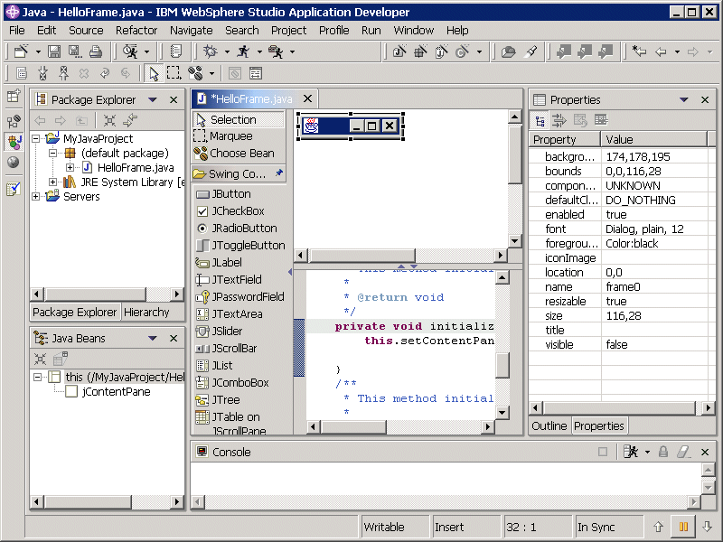

The Visual Editor for Java is a code-centric editor that helps you design applications containing a graphical user interface (GUI). It is based on the JavaBeans component model and supports visual construction using either the Abstract Window Toolkit (AWT) or Swing.
The Visual Editor for Java provides limited visual support for AWT menus. The Visual Editor does provide visualization support for JMenus.
If you are using SINE, you must set the Aventail software to ignore java.exe in order for the Visual Editor for Java to work properly.
You can use the Visual Editor for Java to create a class that includes pre-defined Java beans from the palette. This class can be a runnable class or it can be a Java bean that you intend to include in another class. To be used as a Java bean by the Visual Editor for Java there is no interface that must be implemented and the only requirement is that the editor knows how to instantiate the class. For most purposes this means that the class should be public and have a public null constructor. The null constructor can be explicit or implicit, although there are a few exceptions that the Visual Editor for Java recognizes such as java.awt.Dialog subclasses. They are instantiated using the constructor that takes an argument of java.awt.Frame. The Visual Editor adds an explicit constructor that calls the initialize method, which is used to set up the initial state of the Java bean.
The IDE has a number of editors that can be used to edit a .java source file. The Java Editor lets you write your source manually, while the Visual Editor combines this with a design area that lets you lay out and preview any visual JavaBeans.
The Visual Editor is designed to work with .java source, letting you edit the source and the design simultaneously. Therefore, it does not have its own perspective. If you use the Visual Editor in the Java perspective, any customization you have made to the position of the Tasks view, the Console view and the Outline view are used by the Visual Editor for Java as well as the Java Editor.
The Visual Editor for Java editor is divided into two windows, one showing the Java beans in a design window, and the other showing the associated source. In the design window, Java beans that are AWT or Swing widgets are shown graphically. As you modify the Java beans in the design window, the source is updated. Conversely, as you change the source files, the design window is updated to reflect the changes you make. This round tripping of the design and source windows is designed so that the Visual Editor for Java can be used not only as a tool to generate code, but as an editor to show the effect of source code modifications during development. After you make changes to your .java file source in another editor, your changes will be reflected in the design window of the Visual Editor.
The Visual Editor for Java, by default, shows the design window above the source window on a split pane. The design pane is a WYSIWYG surface that lets you compose the GUI you are building, while the source pane shows the contents of the Java file. The design window has a palette on the left that allows you to control selection of Java beans. At any time you can use the undo option from the edit menu or the toolbar action to undo a change.
You can change the default so that the design and source windows have notebook tabs, allowing you to click back and forth between them. To change the default, click Window > Preferences > Java > Visual Editor. Select the Appearance tab, then click On Separate notebook tabs. Close the Visual Editor Java, then open it again to refresh your preference change.
There are two additional views that are not included in the standard Java Perspective but are used by the Visual Editor for Java. These are the Properties view and the Java beans view that are automatically activated when the Visual Editor opens.
The Java Beans view is a tree that shows the components used by the GUI. The Properties view shows the properties for the selected Java bean. The design window and the Java Beans view show the Java beans that are being used by the class being composed. When you subclass a Java bean, such as HelloFrame that subclasses javax.swing.JFrame, a special part called this is shown on the Design view and the Java Beans view. This represents the instance of the class itself that is being composed and cannot be deleted.

Visual beans that are subclasses of java.awt.Component, such as javax.swing.JFrame, are shown in the Design view with their graphical representation, so that as you edit the class you can preview how it will look at runtime. The class java.awt.Component has a preferredSize property. You can specify an explicit size for each subclass to indicate the size at runtime. By default, the Design view figure shows the preferredSize unless an explicit size has been set. The HelloFrame instance is shown at its preferred size above.
The Properties view shows a list of Java bean properties for the selected Java beans in either the Design view or the Java Beans view. The list of these properties comes from introspection of the Java beans and is covered more in the section on updating properties. Each property usually has a get and set method associated with it and the value of each property is shown in the Properties view. To see the list of properties it may be necessary to enlarge the property sheet by making the workbench window larger or dragging the left edge of the Properties view.
To see the synchronization between views you can change the title of the frame. In the Properties view this is done by selecting the 'title' property and entering a new value. The new title will be shown in the graphical canvas figure of the frame, and also a setTitle() method will be generated in the source. In addition to top down changes, where a change causes the source to be changed, you can change the source directly. Changing the String argument of the setTitle() method will cause the value shown in the Design view and the Properties view to be updated as well. This is a bottom up change from the source to the other views, and the ability to make changes from any of the views and have the others kept in sync is the round tripping feature of the Visual Editor for Java.
Related concepts
Code synchronization
Related tasks
Launching the Visual Editor for Java
The Java bean launcher
Changing the default Java editor